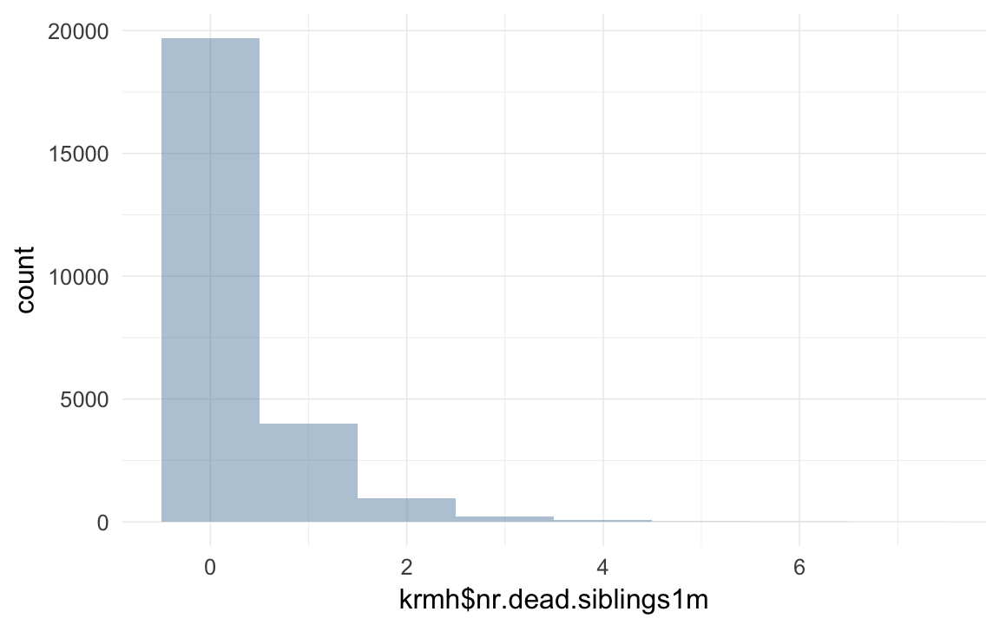

Krummhörn Data wrangling
description of data
The Krummhörn area in Eastern Frisia had around 15000 inhabitants in the early modern period. This population size was comparatively stable, because the settling of this relatively fertile marsh land concluded early.
This dataset resulted from a continuous research effort that started at the Anthropological Institute at the University of Göttingen, moved to the University College London and is now at the Centre for Philosophy and Scientific Basics at the University of Gießen. The focus of the investigation lies at the intersection of genetic and cultural reproduction.
The data is based on the life histories contained in church registers. These were collected systematically and combined genealogically according to the method of family reconstitution. The main aim is the identification of persons and the reconstitution of their life histories. There are additional data on their social background, that could be gleaned from tax records and other social history sources.
The dataset was constructed according to the purposes of the biological inquiry, which results in the following aspects: Families that are mobile are only found in the file at one place, independent of the number of church communities that have records on them The basic unit of analyses is the core family. Their cycle begins typically with a wedding and ends in death or the children’s weddings.
The file is not final, it is continuously being corrected, amended and extended by including further church records.
Loading details
opts_chunk$set(cache=F,tidy=FALSE,autodep=TRUE,dev=c('png','pdf'),fig.width=12,fig.height=7.5,out.width='1440px',out.height='900px')
opts_knit$set(self.contained=F,cache=F)
source("0__helpers.R")Transforming data
krmh.individuals = read.dta("data/kh_24Nov2014/famkind3.dta")
krmh.unions = read.dta("data/kh_24Nov2014/KHfam-4.dta")
krmh.individuals$idIndividu = krmh.individuals$idk
krmh.unions$idPere = krmh.unions$idm_new
krmh.unions$idMere = krmh.unions$idf_new
krmh.individuals = merge(krmh.individuals, krmh.unions[, c('doc','idPere','idMere')], by = "doc", all.x=T)
table(krmh.individuals$gebkk,exclude=NULL)##
## E G T <NA>
## 66699 6158 2015 5936 0table(krmh.individuals$famstatus,exclude=NULL)##
## 0 1 2 3 4 5 <NA>
## 26563 24290 7503 9261 7255 5936 0krmh.individuals = data.table(krmh.individuals)
krmh.unions = data.table(krmh.unions)
miss_frac(krmh.individuals)## [1] 0# make male var.
props(~ krmh.individuals$sex)## krmh.individuals$sex
## M U W
## 0.50975 0.01077 0.47948krmh.individuals[, male := Recode(sex,"'M'=1;'W'=0;else=NA")]
props(~ krmh.individuals$male)## krmh.individuals$male
## 0 1 <NA>
## 0.47948 0.50975 0.01077# famstatus variables contains the following info
# verheiratet: 1 (if famnrk empty)
# ledig (aber ueber 15): 2 (wenn ueber 5 aber famnrk empty)
# verstorben unter 15: 3
# Totgeburt: 4
qplot(krmh.individuals$famstatus)## `stat_bin()` using `bins = 30`. Pick better value with `binwidth`.
props(~ krmh.individuals$famstatus)## krmh.individuals$famstatus
## 0 1 2 3 4 5
## 0.32872 0.30059 0.09285 0.11460 0.08978 0.07346props(~ krmh.individuals$gebkk)## krmh.individuals$gebkk
## E G T
## 0.82540 0.07621 0.02494 0.07346unions
##### Get it into the form we're used to
length(unique(krmh.unions$doc)) # unique union identifier## [1] 35075### parent IDs
krmh.unions[, idParents := doc]
miss_frac(krmh.unions)## [1] 0length(intersect(krmh.unions$idPere, krmh.individuals$idIndividu))## [1] 12054length(intersect(krmh.unions$idMere, krmh.individuals$idIndividu))## [1] 13559length(intersect(krmh.unions$idMere, krmh.unions$idPere))## [1] 0length(intersect(krmh.unions$doc, krmh.individuals$doc))## [1] 28250krmh.u = as.data.frame(krmh.unions)
moms = krmh.u[!is.na(krmh.u$auswahl_id_f),c('idf_new',names(krmh.u)[names(krmh.u) %ends_with% "_id_f"])]
dads = krmh.u[!is.na(krmh.u$auswahl_id_m),c('idm_new',names(krmh.u)[names(krmh.u) %ends_with% "_id_m"])]
names(dads) = str_sub(names(dads),1,-6)
names(moms) = str_sub(names(moms),1,-6)
dads = dads[, names(moms)]
spouses = data.table(rbind(dads,moms))join files
krmh.individuals[, ehemges := as.numeric(Recode(ehemges,"' '=1"))]
krmh.unions[, ehemges := as.numeric(Recode(ehemges,"' '=1"))]
krmh.individuals[, ehefges := as.numeric(Recode(ehefges,"' '=1"))]
krmh.unions[, ehefges := as.numeric(Recode(ehefges,"' '=1"))]
qplot(data=melt(numcolwise(identity)(krmh.individuals)),value) + facet_wrap(~ variable,scales='free')## No id variables; using all as measure variables## `stat_bin()` using `bins = 30`. Pick better value with `binwidth`.## Warning: Removed 1377919 rows containing non-finite values (stat_bin).# qplot(data=melt(catcolwise(identity)(krmh.individuals)),value) + facet_wrap(~ variable,scales='free')
spouses[,idIndividu:=id]
spouses$id=NULL## Warning in alloc.col(x): Attempt to reduce allocation from 111 to 110
## ignored. Can only increase allocation via shallow copy.(uniq_unions = setdiff(names(spouses), names(krmh.individuals)))## [1] "Nbirths" "NinfantD" "NchildD" "NadultD"
## [5] "ageFfirstbirth" "ageFlastbirth" "ageMfirstbirth" "ageMlastbirth"
## [9] "ageHfirst" "ageHlast" "auswahl"krmh = merge(krmh.individuals, spouses[, list(idIndividu, Nbirths, NinfantD, NchildD, NadultD, ageFfirstbirth, ageFlastbirth, ageMfirstbirth, ageMlastbirth, ageHfirst, ageHlast)], by = "idIndividu", all.x =T)
table(krmh$Nbirths)##
## 1 2 3 4 5 6 7 8 9 10 11 12 13 14 15
## 3248 2613 2512 2595 2535 2186 1695 1252 806 436 189 103 51 34 12
## 16 17 18 20
## 10 2 4 1miss_frac(krmh)## [1] 0count kids
krmh[,idParents := doc]
count_spouses = function(df, df2, what, wt_var) {
df = data.frame(df)
df2 = data.frame(df2)
counted.husband = dcast(data= df2[,c('idPere',wt_var)],formula = idPere ~ .,fun.aggregate = sum, na.rm=T, value.var = wt_var)
counted.wive = dcast(data= df2[,c('idMere',wt_var)],formula = idMere ~ .,fun.aggregate = sum, na.rm=T, value.var = wt_var)
names(counted.husband) = names(counted.wive) = c('idIndividu',what)
counted = rbind(counted.husband,counted.wive)
df = merge(df,counted,by='idIndividu',all.x=T)
df[,what] = Recode(df[,what],'NA=0')
data.table(df)
}
krmh$born = 1; krmh.unions$born = 1
# spouses[spouses$idIndividu==1,]
# krmh.unions[idPere==2,]
# krmh.individuals[idIndividu==2,]
krmh = count_spouses(krmh,krmh.unions, 'spouses', "born")
# qplot(krmh$spouses,ifelse(krmh$male==T, krmh$ehemges,krmh$ehefges), geom = "jitter")
# xtabs(~ krmh$spouses + ifelse(krmh$male==T, krmh$ehemges,krmh$ehefges), exclude =NULL, na.action=na.pass)
krmh$survive1d = ifelse(krmh$ageKtod_days > 1, 1, 0)
krmh$survive1m = ifelse(krmh$ageKtod_days > 28, 1, 0)
krmh$dead1m = ifelse(krmh$ageKtod_days > 28, 0, 1)
krmh$dead1y = ifelse(krmh$ageK1 >= 1, 0, 1)
krmh$dead5y = ifelse(krmh$ageK15 > 5, 0, 1)
krmh$deadR = ifelse(krmh$ageK15 >= 15, 0, 1)
krmh$survive5y = ifelse(krmh$ageK15 > 5, 1, 0)
krmh$survive1y = ifelse(krmh$ageK1 >= 1, 1, 0)
krmh$surviveR = ifelse(krmh$ageK15 >= 15, 1, 0)
krmh$born =1
krmh[, not_stillborn := ifelse(famstatus != 4,1,0)]
krmh[, survive1d := ifelse(famstatus != 4,1,0)] # small discrepancy of 7 with gebkk, but dead the first day, maybe not stillborn
# krmh[, survive1d := ifelse(gebkk!='Todgeburt' | is.na(gebkk),1, 0) ] # age is always missing in these ~1600 cases
props(~ krmh$survive1d)## krmh$survive1d
## 0 1
## 0.08978 0.91022xtabs(data=krmh, ~ spouses + famstatus)## famstatus
## spouses 0 1 2 3 4 5
## 0 26563 3 7503 9257 7255 4614
## 1 0 21407 0 4 0 1092
## 2 0 2613 0 0 0 198
## 3 0 247 0 0 0 27
## 4 0 19 0 0 0 5
## 5 0 1 0 0 0 0props(~ krmh$famstatus)## krmh$famstatus
## 0 1 2 3 4 5
## 0.32872 0.30059 0.09285 0.11460 0.08978 0.07346krmh[survive1d == 0, age := 0 ] # i dont want age to be missing here
krmh[survive1d == 0, age.days := 0 ] # i dont want age to be missing here
krmh[, ever_married := ifelse(famstatus==1,1,0) ] # famstatus does not map directly
xtabs(data=krmh, ~ spouses + ever_married) # big discrepancy## ever_married
## spouses 0 1
## 0 55192 3
## 1 1096 21407
## 2 198 2613
## 3 27 247
## 4 5 19
## 5 0 1krmh[, ever_married := ifelse(spouses>0,1,0) ]
xtabs(data=krmh, ~ surviveR + ever_married)## ever_married
## surviveR 0 1
## 0 15454 0
## 1 14609 24798# krmh[ever_married == TRUE,surviveR := 1] # dead kids can't marry
props(~ krmh$surviveR)## krmh$surviveR
## 0 1 <NA>
## 0.1912 0.4877 0.3211qplot(data=krmh, x= age) + facet_wrap (~ surviveR)## `stat_bin()` using `bins = 30`. Pick better value with `binwidth`.## Warning: Removed 73553 rows containing non-finite values (stat_bin).krmh[,paternalage := ageMgebK/10]
krmh[paternalage < 1 ,paternalage := NA]
krmh[,maternalage := ageFgebK/10]
qplot(maternalage,paternalage,data=krmh,geom="jitter",alpha=I(0.1))## Warning: Removed 54034 rows containing missing values (geom_point).cor.test(krmh$maternalage,krmh$paternalage)##
## Pearson's product-moment correlation
##
## data: krmh$maternalage and krmh$paternalage
## t = 130, df = 27000, p-value <2e-16
## alternative hypothesis: true correlation is not equal to 0
## 95 percent confidence interval:
## 0.6185 0.6331
## sample estimates:
## cor
## 0.6259krmh.unions = krmh.unions[order(krmh.unions$idPere,krmh.unions$dat4),]
krmh.unions$marriage.order.Father = ave(rep(NA, nrow(krmh.unions)), krmh.unions$idPere, FUN = seq_along)
krmh.unions = krmh.unions[order(krmh.unions$idMere,krmh.unions$dat4),]
krmh.unions$marriage.order.Mother = ave(rep(NA, nrow(krmh.unions)), krmh.unions$idMere, FUN = seq_along)
krmh = merge(krmh, krmh.unions[,list(idParents,marriage.order.Mother,marriage.order.Father,dat4,dat8),],by="idParents",all.x=T)
krmh$first.marriage = (krmh$marriage.order.Mother + krmh$marriage.order.Father) == 2
table(krmh$first.marriage,exclude=NULL)##
## FALSE TRUE <NA>
## 9867 70941 0qplot(krmh.unions$marriage.order.Mother)## `stat_bin()` using `bins = 30`. Pick better value with `binwidth`.Known families
We apply the following criteria to consider a family “known”, which means we can make some further assumptions. If we know the bride’s and groom’s end of marriage, that is we have upper bound death dates (todk8) for at least one spouse and a lower bound death date for the other spouse that exceeds this date, we know that this family spent its time in the Krummhörn. Thus we can conclude that children who have missing death dates did not die, they emigrated (otherwise we’d have dates because the family is on-the-record).
# we consider a family "known" if we know that one spouse survived the other and we have the marriage date. if we have missing death dates for such children, we can assume that they emigrated (thus made 15), we'd know if they'd died in the KH
krmh$known_family = krmh$ehebekannt
nrow(krmh[is.na(survive1m) & known_family, ])## [1] 18141nrow(krmh[is.na(survive1y) & known_family, ])## [1] 2137nrow(krmh[is.na(surviveR) & known_family, ])## [1] 2137krmh[is.na(survive1m) & known_family, survive1m := 1 ]
krmh[is.na(survive1y) & known_family, survive1y := 1 ]
krmh[is.na(surviveR) & known_family, surviveR := 1 ]
props(~ krmh$known_family)## krmh$known_family
## 1 <NA>
## 0.408 0.592krmh = count_and_merge(krmh, 'children', wt_var = "born")
xtabs(data=krmh, ~ Nbirths + children,na.action = na.pass,exclude=NULL)## children
## Nbirths 0 1 2 3 4 5 6 7 8 9 10
## 1 0 3248 0 0 0 0 0 0 0 0 0
## 2 0 0 2613 0 0 0 0 0 0 0 0
## 3 0 0 0 2512 0 0 0 0 0 0 0
## 4 0 0 0 0 2595 0 0 0 0 0 0
## 5 0 0 0 0 0 2535 0 0 0 0 0
## 6 0 0 0 0 0 0 2186 0 0 0 0
## 7 0 0 0 0 0 0 0 1695 0 0 0
## 8 0 0 0 0 0 0 0 0 1252 0 0
## 9 0 0 0 0 0 0 0 0 0 806 0
## 10 0 0 0 0 0 0 0 0 0 0 436
## 11 0 0 0 0 0 0 0 0 0 0 0
## 12 0 0 0 0 0 0 0 0 0 0 0
## 13 0 0 0 0 0 0 0 0 0 0 0
## 14 0 0 0 0 0 0 0 0 0 0 0
## 15 0 0 0 0 0 0 0 0 0 0 0
## 16 0 0 0 0 0 0 0 0 0 0 0
## 17 0 0 0 0 0 0 0 0 0 0 0
## 18 0 0 0 0 0 0 0 0 0 0 0
## 20 0 0 0 0 0 0 0 0 0 0 0
## <NA> 60524 0 0 0 0 0 0 0 0 0 0
## children
## Nbirths 11 12 13 14 15 16 17 18 20
## 1 0 0 0 0 0 0 0 0 0
## 2 0 0 0 0 0 0 0 0 0
## 3 0 0 0 0 0 0 0 0 0
## 4 0 0 0 0 0 0 0 0 0
## 5 0 0 0 0 0 0 0 0 0
## 6 0 0 0 0 0 0 0 0 0
## 7 0 0 0 0 0 0 0 0 0
## 8 0 0 0 0 0 0 0 0 0
## 9 0 0 0 0 0 0 0 0 0
## 10 0 0 0 0 0 0 0 0 0
## 11 189 0 0 0 0 0 0 0 0
## 12 0 103 0 0 0 0 0 0 0
## 13 0 0 51 0 0 0 0 0 0
## 14 0 0 0 34 0 0 0 0 0
## 15 0 0 0 0 12 0 0 0 0
## 16 0 0 0 0 0 10 0 0 0
## 17 0 0 0 0 0 0 2 0 0
## 18 0 0 0 0 0 0 0 4 0
## 20 0 0 0 0 0 0 0 0 1
## <NA> 0 0 0 0 0 0 0 0 0krmh$children.per.spouse = krmh$children/krmh$spouses
krmh$children.per.spouse[which(krmh$spouses==0)] = NA
qplot(krmh$children.per.spouse)## `stat_bin()` using `bins = 30`. Pick better value with `binwidth`.## Warning: Removed 55195 rows containing non-finite values (stat_bin).qplot(krmh$children)## `stat_bin()` using `bins = 30`. Pick better value with `binwidth`.# well we know that people who reproduced or married usually made 15
changeNAto1 = function(x) { colwise(function(x) { ifelse(is.na(x), 1, x)})(x) }
krmh[children>0 | spouses>0, surviveR := ifelse(is.na(surviveR), 1, surviveR)]
krmh[children>0 | spouses>0, survive1d := ifelse(is.na(survive1d), 1, survive1d)]
krmh[children>0 | spouses>0, survive1y := ifelse(is.na(survive1y), 1, survive1y)]
krmh = count_and_merge(krmh, 'children.surviving1d', wt_var = 'survive1d')
krmh = count_and_merge(krmh, 'children.surviving1m', wt_var = 'survive1m')
krmh = count_and_merge(krmh, 'children.surviving1y', wt_var = 'survive1y')
krmh = count_and_merge(krmh, 'children.surviving5y', wt_var = 'survive5y')
krmh = count_and_merge(krmh, 'children.survivingR', wt_var = 'surviveR')
krmh = count_and_merge(krmh, 'children.dead1m', wt_var = 'dead1m')
krmh = count_and_merge(krmh, 'children.dead1y', wt_var = 'dead1y')
table(krmh$children.dead1y== krmh$NinfantD)##
## FALSE TRUE
## 263 20021# xtabs(~ krmh$children.dead1y + krmh$NinfantD, exclude = NULL, na.action = na.pass)
krmh = count_and_merge(krmh, 'children.dead5y', wt_var = 'dead5y')
krmh = count_and_merge(krmh, 'children.deadR', wt_var = 'deadR')
table(krmh$children.deadR - krmh$children.dead1y == krmh$NchildD)##
## TRUE
## 20284xtabs(~ I(krmh$children.deadR - krmh$children.dead1y) + krmh$NchildD, exclude = NULL, na.action = na.pass)## krmh$NchildD
## I(krmh$children.deadR - krmh$children.dead1y) 0 1 2 3
## 0 12880 0 0 0
## 1 0 5046 0 0
## 2 0 0 1634 0
## 3 0 0 0 536
## 4 0 0 0 0
## 5 0 0 0 0
## 6 0 0 0 0
## 7 0 0 0 0
## krmh$NchildD
## I(krmh$children.deadR - krmh$children.dead1y) 4 5 6 7
## 0 0 0 0 0
## 1 0 0 0 0
## 2 0 0 0 0
## 3 0 0 0 0
## 4 148 0 0 0
## 5 0 33 0 0
## 6 0 0 3 0
## 7 0 0 0 4
## krmh$NchildD
## I(krmh$children.deadR - krmh$children.dead1y) <NA>
## 0 60524
## 1 0
## 2 0
## 3 0
## 4 0
## 5 0
## 6 0
## 7 0changeNAto0 = function(x) { ifelse(is.na(x), 0, x) }
krmh$children.unknown_fate = krmh$Nbirths - krmh$NchildD - krmh$NinfantD - krmh$NadultD
qplot(krmh$children.unknown_fate)## `stat_bin()` using `bins = 30`. Pick better value with `binwidth`.## Warning: Removed 60524 rows containing non-finite values (stat_bin).table(krmh$children.unknown_fate)##
## 0 1 2 3 4 5 6 7 8 9 10 11
## 10534 3768 2204 1471 1075 608 330 186 49 37 12 6
## 12 13 16
## 2 1 1table(krmh$NchildD)##
## 0 1 2 3 4 5 6 7
## 12880 5046 1634 536 148 33 3 4krmh = count_and_merge(krmh, 'children.spouses', wt_var = 'spouses')
krmh = count_and_merge(krmh, 'grandchildren.per.spouse', wt_var = 'children.per.spouse')
krmh = count_and_merge(krmh, 'grandchildren',wt_var='children')
krmh = count_and_merge(krmh, 'grandchildren.surviving1d', wt_var = 'children.surviving1d')
krmh = count_and_merge(krmh, 'grandchildren.surviving1m', wt_var = 'children.surviving1m')
krmh = count_and_merge(krmh, 'grandchildren.surviving1y', wt_var = 'children.surviving1y')
krmh = count_and_merge(krmh, 'grandchildren.survivingR', wt_var = 'children.survivingR')
krmh = count_and_merge(krmh, 'grandchildren.dead1m', wt_var = 'children.dead1m')
props(~ krmh$spouses)## krmh$spouses
## 0 1 2 3 4 5
## 6.830e-01 2.785e-01 3.479e-02 3.391e-03 2.970e-04 1.238e-05xtabs(~ (grandchildren>0) +(children>0) + (spouses>0) + surviveR,data=krmh,exclude=NULL, na.action= na.pass)## , , spouses > 0 = FALSE, surviveR = 0
##
## children > 0
## grandchildren > 0 FALSE TRUE
## FALSE 15454 0
## TRUE 0 0
##
## , , spouses > 0 = TRUE, surviveR = 0
##
## children > 0
## grandchildren > 0 FALSE TRUE
## FALSE 0 0
## TRUE 0 0
##
## , , spouses > 0 = FALSE, surviveR = 1
##
## children > 0
## grandchildren > 0 FALSE TRUE
## FALSE 16423 0
## TRUE 0 0
##
## , , spouses > 0 = TRUE, surviveR = 1
##
## children > 0
## grandchildren > 0 FALSE TRUE
## FALSE 5329 9607
## TRUE 0 10677
##
## , , spouses > 0 = FALSE, surviveR = NA
##
## children > 0
## grandchildren > 0 FALSE TRUE
## FALSE 23318 0
## TRUE 0 0
##
## , , spouses > 0 = TRUE, surviveR = NA
##
## children > 0
## grandchildren > 0 FALSE TRUE
## FALSE 0 0
## TRUE 0 0qplot(krmh$children)## `stat_bin()` using `bins = 30`. Pick better value with `binwidth`.
krmh[, age:=ageKtod/10]
qplot(krmh[which(krmh$age > 1.5),]$children )## `stat_bin()` using `bins = 30`. Pick better value with `binwidth`.qplot(krmh$grandchildren)## `stat_bin()` using `bins = 30`. Pick better value with `binwidth`.qplot(krmh[which(krmh$age > 1.5),]$grandchildren )## `stat_bin()` using `bins = 30`. Pick better value with `binwidth`.qplot(krmh$spouses)## `stat_bin()` using `bins = 30`. Pick better value with `binwidth`.miss_frac(krmh)## [1] 0pre-calculate some predictors
krmh = krmh[order(krmh$idParents,krmh$gebk4), ]
krmh <- transform(krmh, birthorder = ave(rep(NA, nrow(krmh)), krmh$idParents, FUN = seq_along)) # old trick to get birth order, don't know what this does to those with missings for father though
krmh$birthorder.mean = ave(krmh$birthorder,krmh$idParents,FUN= function(x) { mean(x,na.rm=T) } )
krmh$birthorder.diff = krmh$birthorder - krmh$birthorder.mean
qplot(krmh$birthorder,binwidth=1)
krmh[, byear := year(gebk4)]
transform(krmh[1:40,list(idParents,byear,birthorder,surviveR)], min15.birthorder = ave(surviveR, idParents, FUN =function(x) { x[is.na(x)] = 0
cumsum(x)
} )) # NAs propagate problematically...
krmh <- transform(krmh, min15.birthorder = ave(surviveR, idPere, FUN =function(x) { x[is.na(x)] = 0
cumsum(x)
} ))
xtabs(data=krmh, ~is.na(birthorder) + is.na(min15.birthorder))## is.na(min15.birthorder)
## is.na(birthorder) FALSE
## FALSE 80808table(krmh$min15.birthorder,exclude=NULL)##
## 0 1 2 3 4 5 6 7 8 9 10 11
## 23859 24089 12118 8134 5439 3341 1958 1037 484 200 77 41
## 12 13 14 <NA>
## 21 9 1 0krmh$min15.birthorder.mean = ave(krmh$min15.birthorder,krmh$idParents,FUN= function(x) { mean(x,na.rm=T) } )
krmh$min15.birthorder.diff = krmh$min15.birthorder - krmh$min15.birthorder.mean
krmh[, nr.siblings := ave(born,doc,FUN= function(x) { sum(x,na.rm=T) } ) - 1]
qplot(krmh$nr.siblings,binwidth=1)
krmh$nr.dead.siblings1m = ave(krmh$dead1m,krmh$idParents,FUN= function(x) { sum(x,na.rm=T) } ) - krmh$dead1m # don't count self! dont't control for outcome
qplot(krmh$nr.dead.siblings1m,binwidth=1)## Warning: Removed 55835 rows containing non-finite values (stat_bin).
krmh$infant.death.cluster = krmh$nr.dead.siblings1m/krmh$nr.siblings
qplot(krmh$infant.death.cluster)## `stat_bin()` using `bins = 30`. Pick better value with `binwidth`.## Warning: Removed 57229 rows containing non-finite values (stat_bin).qplot(krmh[which(krmh$nr.siblings>1),]$infant.death.cluster)## `stat_bin()` using `bins = 30`. Pick better value with `binwidth`.## Warning: Removed 38548 rows containing non-finite values (stat_bin).lag.0 = function(x) {
if(length(x)==1) 0
else c(0,x[ 1:(length(x)-1)])
}
inv.lag.0 = function(x) {
if(length(x)==1) 0
else c(x[ 2:length(x)],0)
}
krmh = transform(krmh, older.sib.made.15y = ave(surviveR, idParents, FUN = lag.0))
krmh = transform(krmh, younger.sib.made.15y = ave(surviveR, idParents, FUN = inv.lag.0))Get grandparents
grandparents = krmh[, list(idIndividu,idPere,idMere, paternalage, maternalage)]
names(grandparents) = c('idMere', 'idMaternalGrandfather', 'idMaternalGrandmother', 'maternal.grandpaternalage', 'maternal.grandmaternalage')
krmh = merge(krmh, grandparents, by = "idMere", all.x =T)
names(grandparents) = c('idPere', 'idPaternalGrandfather', 'idPaternalGrandmother', 'paternal.grandpaternalage', 'paternal.grandmaternalage')
krmh = merge(krmh, grandparents, by = "idPere", all.x =T)high-level predictors
krmh$born = NULL # was just an aid## Warning in alloc.col(x): Attempt to reduce allocation from 299 to 298
## ignored. Can only increase allocation via shallow copy.krmh = data.table(krmh)
krmh[, bdate := gebk4]
krmh[, ddate := todk4]
krmh[, ddate.Mother := todf4]
krmh[, ddate.Father := todm4]
krmh$byear.years = year(krmh$bdate)
krmh$dyear.years = year(krmh$ddate)
krmh[, dyear := dyear.years]krmh = krmh %>%
tbl_df %>%
group_by(idParents) %>%
mutate(
younger_sibs_ad_5y = younger_sibs_alive_and_dependent(survive5y=survive5y, byear=byear.years, dyear=dyear.years) ,
older_sibs_ad_5y = older_sibs_alive_and_dependent(survive5y=survive5y, byear=byear.years, dyear=dyear.years),
dependent_sibs_f5y = dependent_sibs_f5y(survive1y=survive1y, byear=byear, dyear=dyear)
) %>% data.table()miss_frac(krmh)## [1] 0krmh$ddate = as.Date(krmh$ddate)
krmh$ddate.Mother = as.Date(krmh$ddate.Mother)
krmh$ddate.Father = as.Date(krmh$ddate.Father)
krmh$bdate = as.Date(krmh$bdate)
krmh$bdate.Mother = as.Date(krmh$gebf4)
krmh$bdate.Father = as.Date(krmh$gebm4)
krmh$paternal_alive = as.numeric(krmh$ddate.Father-krmh$bdate)/365
qplot(krmh$paternal_alive)## `stat_bin()` using `bins = 30`. Pick better value with `binwidth`.## Warning: Removed 33293 rows containing non-finite values (stat_bin).krmh$paternalloss = ifelse(as.POSIXct(krmh$bdate) + dyears(5) > as.POSIXct(krmh$ddate.Father),1,0)
krmh$paternalloss_by_35 = as.POSIXct(krmh$bdate) + dyears(35) > as.POSIXct(krmh$ddate.Father)
krmh$maternalloss = ifelse(as.POSIXct(krmh$bdate) + dyears(5) > as.POSIXct(krmh$ddate.Mother),1,0)
krmh$maternalloss_by_35 = as.POSIXct(krmh$bdate) + dyears(35) > as.POSIXct(krmh$ddate.Mother)
krmh$parentalloss_might_be_disease = FALSE
krmh[as.POSIXct(bdate) + ddays(30) > as.POSIXct(ddate.Father),]$parentalloss_might_be_disease = TRUE
krmh[as.POSIXct(bdate) + ddays(30) > as.POSIXct(ddate.Mother),]$parentalloss_might_be_disease = TRUEkrmh = data.table(krmh)
krmh$landownership = Recode(krmh$grasen,"0:1='0 landless';1:25='1-25 grasen';25:140='25-140 grasen';140:hi='140+ grasen'")
krmh$landless = Recode(krmh$grasen,"0:1=T;1:hi=F")
props(~ krmh$landownership)## krmh$landownership
## 0 landless 1-25 grasen 140+ grasen 25-140 grasen <NA>
## 0.14782 0.06791 0.01771 0.06346 0.70310props(~ krmh$landless) ## krmh$landless
## 0 1 <NA>
## 0.1491 0.1478 0.7031krmh[, ageK5 := ifelse(age > 5, 5, age)]
krmh[krmh$dat8_fam1< krmh$bdate, dat8_fam1:=NA]
krmh[, paternalloss_m := (ifelse(bdate + days(ifelse(is.na(ageK5), 5, round(ageK5*365))) <= ddate.Father,
ifelse(is.na(dat8_fam1) | ddate.Father < dat8_fam1, 'dead_b_m', 'dead_a_m'), 'dead_5y'))]
krmh[, maternalloss_m := (ifelse(bdate + days(ifelse(is.na(ageK5), 5, round(ageK5*365))) <= ddate.Mother,
ifelse(is.na(dat8_fam1) | ddate.Mother < dat8_fam1, 'dead_b_m', 'dead_a_m'), 'dead_5y'))]
krmh[, paternalloss_k1 := ifelse(bdate + days(ifelse(is.na(ageK1), 1, round(ageK1*365))) <= ddate.Father,
1,0)]
krmh[, maternalloss_k1 := ifelse(
bdate + days(ifelse(is.na(ageK1), # if the birth date is larger
ifelse(is.na(survive1y),1,365), round(ageK1*365))) <= ddate.Mother,
1,0)]krmh[, mother_child_die_within_7d := ifelse(abs(ddate - ddate.Mother) <= 7, 1, 0)]
krmh[is.na(mother_child_die_within_7d), mother_child_die_within_7d := ifelse(nr.siblings > birthorder, 0, NA)]
krmh[is.na(mother_child_die_within_7d), mother_child_die_within_7d := ifelse(survive1y==1, 0, NA)]
crosstabs(krmh$mother_child_die_within_7d)## krmh$mother_child_die_within_7d
## 0 1 <NA>
## 65490 625 14693krmh[, maternalloss_k1 := ifelse( ageK1 < 1,
ifelse(ddate.Mother < ddate,
ifelse( mother_child_die_within_7d,
"disease_double_death", "mother_died_before_child"),
"no_early_maternal_loss"),
ifelse(as.POSIXct(ddate.Mother) < as.POSIXct(bdate) + dyears(1),
"mother_died_before_child", "no_early_maternal_loss")
)]crosstabs(krmh$maternalloss_k1)## krmh$maternalloss_k1
## disease_double_death mother_died_before_child no_early_maternal_loss
## 42 839 38671
## <NA>
## 41256krmh[, early_maternalloss := maternalloss_k1 != "no_early_maternal_loss" ]
krmh[, maternalloss_k1 := relevel(factor(maternalloss_k1), ref = "no_early_maternal_loss")]
crosstabs(~krmh$paternalloss_m) ## krmh$paternalloss_m
## dead_5y dead_a_m dead_b_m <NA>
## 813 7715 38987 33293crosstabs(~krmh$maternalloss_m)## krmh$maternalloss_m
## dead_5y dead_a_m dead_b_m <NA>
## 702 9396 37027 33683crosstabs(~krmh$maternalloss_m + krmh$paternalloss_m) ## krmh$paternalloss_m
## krmh$maternalloss_m dead_5y dead_a_m dead_b_m <NA>
## dead_5y 31 105 399 167
## dead_a_m 162 4845 3502 887
## dead_b_m 426 2084 28917 5600
## <NA> 194 681 6169 26639min_na = function(x) { ifelse(all(is.na(x)), NA, min(x, na.rm=T) ) }
max_na = function(x) { ifelse(all(is.na(x)), NA, max(x, na.rm=T) ) }
krmh[, paternalage_at_1st_sib := ave(paternalage, idPere, FUN = min_na)]
krmh[, paternalage_at_last_sib := ave(paternalage, idPere, FUN = max_na)]
krmh[, maternalage_at_1st_sib := ave(maternalage, idMere, FUN = min_na)]
krmh[, maternalage_at_last_sib := ave(maternalage, idMere, FUN = max_na)]
fathers = krmh[!duplicated(idPere), list(idPere, paternalage_at_1st_sib, paternalage_at_last_sib)]
names(fathers) = c("idIndividu","age_at_1st_child", "age_at_last_child")
mothers = krmh[!duplicated(idMere), list(idMere, maternalage_at_1st_sib, maternalage_at_last_sib)]
names(mothers) = c("idIndividu","age_at_1st_child", "age_at_last_child")
parents = rbind(fathers, mothers)
krmh = merge(krmh, parents, by = "idIndividu", all.x = T)krmh$dyear.Mother = year(krmh$ddate.Mother)
krmh$dyear.Father = year(krmh$ddate.Father)
krmh %>%
mutate(maternal_loss_age = dyear.Mother - byear
,maternal_loss_age = as.numeric(ifelse(maternal_loss_age >= -1 & maternal_loss_age < 0, 0, maternal_loss_age))
,maternal_loss = as.character(cut(maternal_loss_age, breaks = c(0,1,5,10,15,20,25,30,35,40,45), include.lowest = T ))
,maternal_loss = ifelse( maternal_loss_age >= 45, "later", maternal_loss)
,maternal_loss = ifelse(is.na(maternal_loss_age) | maternal_loss_age < 0, "unclear", maternal_loss)
,maternal_loss = factor(maternal_loss, levels = c("later","[0,1]", "(1,5]", "(5,10]", "(10,15]", "(15,20]", "(20,25]", "(25,30]", "(30,35]", "(35,40]", "(40,45]", "unclear"))
,paternal_loss_age = dyear.Father - byear
,paternal_loss_age = as.numeric(ifelse(paternal_loss_age >= -1 & paternal_loss_age < 0, 0, paternal_loss_age))
,paternal_loss = as.character(cut(paternal_loss_age, breaks = c(0,1,5,10,15,20,25,30,35,40,45), include.lowest = T ))
,paternal_loss = ifelse( paternal_loss_age >= 45, "later", paternal_loss)
,paternal_loss = ifelse(is.na(paternal_loss_age) | paternal_loss_age < 0, "unclear", paternal_loss)
,paternal_loss = factor(paternal_loss, levels = c("later","[0,1]", "(1,5]", "(5,10]", "(10,15]", "(15,20]", "(20,25]", "(25,30]", "(30,35]", "(35,40]", "(40,45]", "unclear"))
) %>%
data.table() ->
krmh
table(krmh$maternal_loss, exclude = NULL) ##
## later [0,1] (1,5] (5,10] (10,15] (15,20] (20,25] (25,30] (30,35]
## 8567 1822 3297 4023 3853 3675 3919 4374 4768
## (35,40] (40,45] unclear <NA>
## 5079 3739 33692 0table(krmh$paternal_loss, exclude = NULL)##
## later [0,1] (1,5] (5,10] (10,15] (15,20] (20,25] (25,30] (30,35]
## 5230 1448 3332 4638 4937 5164 5238 5302 5006
## (35,40] (40,45] unclear <NA>
## 4353 2854 33306 0krmh[, birth.cohort := year_bins(byear)]
crosstabs(krmh$birth.cohort) ## krmh$birth.cohort
## 1570-1575 1580-1585 1585-1590 1595-1600 1600-1605 1605-1610 1615-1620
## 2 1 1 1 1 2 3
## 1620-1625 1625-1630 1630-1635 1635-1640 1640-1645 1645-1650 1650-1655
## 2 5 44 78 100 95 97
## 1655-1660 1660-1665 1665-1670 1670-1675 1675-1680 1680-1685 1685-1690
## 169 155 194 254 254 285 339
## 1690-1695 1695-1700 1700-1705 1705-1710 1710-1715 1715-1720 1720-1725
## 378 717 800 826 945 1189 1121
## 1725-1730 1730-1735 1735-1740 1740-1745 1745-1750 1750-1755 1755-1760
## 1319 1850 2001 1955 1859 1783 1945
## 1760-1765 1765-1770 1770-1775 1775-1780 1780-1785 1785-1790 1790-1795
## 1916 2182 2210 2047 1920 1882 2069
## 1795-1800 1800-1805 1805-1810 1810-1815 1815-1820 1820-1825 1825-1830
## 2217 2161 2045 2145 2310 2374 2369
## 1830-1835 1835-1840 1840-1845 1845-1850 1850-1855 1855-1860 1860-1865
## 2336 2389 2488 2467 2380 2284 2236
## 1865-1870 1870-1875 1875-1880 1880-1885 1885-1890 1890-1895 1895-1900
## 2325 2175 526 475 494 458 510
## 1900-1905 1905-1910 1910-1915 1915-1920 1920-1925 1925-1930 1930-1935
## 400 276 119 36 17 7 3
## <NA>
## 5790krmh[byear < 1670, birth.cohort := "1570-1670"]
krmh[byear >= 1670 & byear < 1700, birth.cohort := "1670-1700"]
krmh[byear >= 1700 & byear < 1720, birth.cohort := "1700-1720"]
krmh[byear >= 1720 & byear < 1760, birth.cohort := "1720-1760"]
krmh[byear >= 1900, birth.cohort := "1900-1935"]
crosstabs(krmh$birth.cohort) ## krmh$birth.cohort
## 1570-1670 1670-1700 1700-1720 1720-1760 1760-1765 1765-1770 1770-1775
## 950 2227 3760 13833 1916 2182 2210
## 1775-1780 1780-1785 1785-1790 1790-1795 1795-1800 1800-1805 1805-1810
## 2047 1920 1882 2069 2217 2161 2045
## 1810-1815 1815-1820 1820-1825 1825-1830 1830-1835 1835-1840 1840-1845
## 2145 2310 2374 2369 2336 2389 2488
## 1845-1850 1850-1855 1855-1860 1860-1865 1865-1870 1870-1875 1875-1880
## 2467 2380 2284 2236 2325 2175 526
## 1880-1885 1885-1890 1890-1895 1895-1900 1900-1935 <NA>
## 475 494 458 510 858 5790krmh$older_siblings = factor(ifelse((krmh$birthorder - 1) > 4,"5+", krmh$birthorder - 1))
krmh$last_born = ifelse(krmh$birthorder == krmh$nr.siblings, 1, 0)
krmh = krmh[order(krmh$idParents,krmh$bdate), ]
krmh <- transform(krmh, siblings = ave(rep(NA, nrow(krmh)), krmh$idParents, FUN = length)-1) # sibling count
krmh <- transform(krmh, birthorder = ave(rep(NA, nrow(krmh)), krmh$idParents, FUN = seq_along)) # old trick to get birth order, don't know what this does to those with missings for father though
qplot(krmh$birthorder) ## `stat_bin()` using `bins = 30`. Pick better value with `binwidth`.krmh$younger_siblings = krmh$siblings + 1 - krmh$birthorderrecenter_all = function(x) { recenter.pat( recenter.pat( x, among_who="idParents"), what = "maternalage", among_who = "idParents") }
krmh[fall %in% c("P","C") & ehem==" ", ehem := "1"]
krmh$birth_cohort = factor(krmh$birth.cohort)
krmh$male = factor(krmh$male)
krmh$last_born = factor(krmh$last_born)
krmh = recenter_all(krmh)
krmh[, any_surviving_children := ifelse(children.survivingR > 0, 1, 0)]
krmh[, children.wddate := children.dead1y + children.surviving1y]
krmh = krmh[, maternalage.factor := cut((10*maternalage), breaks = c(14, 20, 35, 50))]
krmh$maternalage.factor = relevel(krmh$maternalage.factor, ref = "(20,35]")
krmh.with.paternalage = subset(krmh, subset = !is.na(paternalage) )
krmh.fm = subset(krmh.with.paternalage, subset = ehebekannt==TRUE & paternal_loss != "unclear" & maternal_loss != "unclear") # krmh.fm contains only those were we know how the marriage ended
krmh.1 = krmh.fm[geburtsjahrK>=1720 & geburtsjahrK< 1835, ]
save(krmh,krmh.1,file="krmh.rdata")
# save(krmh,krmh.1,krmh_pedigree,file="krmh.rdata")